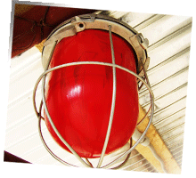

Interlocks
Interlocks are used to switch off the RFR emitter when a door, hatch, or other entry point is breached. There should be standard operating procedures identifying all tasks that require safety interlock systems and documenting what alternative safety procedures are to be implemented when bypassing the interlock.